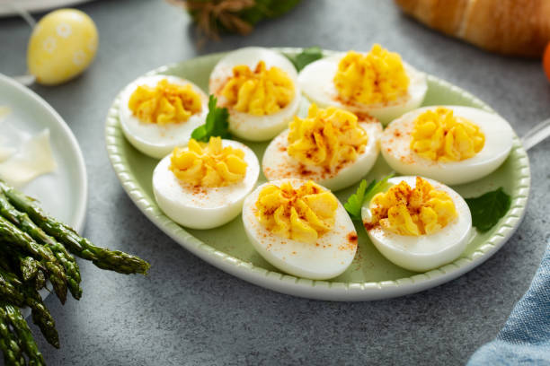

Deviled Eggs Recipe

Deviled Eggs
Deviled eggs are delicious!
Ingredients
- Eggs
- Mayonaise
- Sugar
- Vinegar
- Mustard
- Vegetables
- Seasonings
Steps
- Peel hard boild eggs
- Slice eggs in half length wise and remove yolks
- Mash yolks in a bowl. Stir in mayonaise, sugar, vinegar, mustard, onion, and celery; mix well and season with salt
- Fill egg whites with yolk mixture
- Sprinkle with paprika and serve